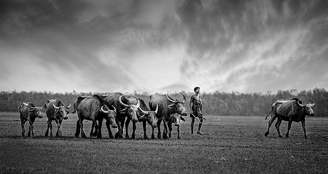
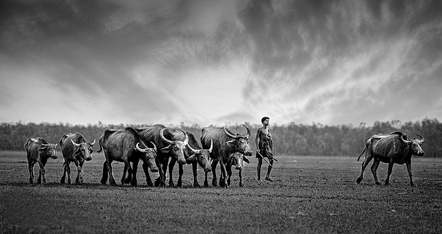

Nijhum Dwip (Bengali: নিঝুম দ্বীপ, lit. 'Silent Island')[1] is a small island under Hatiya upazila. It is situated in Noakhali District in Bangladesh. Once it was called Char Osmani, Baluar Char, Golden Island [2]
A cluster of islands (mainly, Ballar Char, Kamlar Char, Char Osman and Char Muri) emerged in the early 1950s as an alluvium in the shallow estuary of the Bay of Bengal on the south of Noakhali. These new sandbanks first drew the notice of a group of fishermen, who named it Baular Char (literally, the alluvium of sand) later transformed into Ballar Char. Occupying an area of 14,050 acres (5,686 hectares), the island is situated between 21 0 1 / to 22 0 6 /North latitude and 90 0 3 / to 91 0 4 / East longitude
Migratory Birds in Nijhum Dwip: During winter, thousands of migratory birds flock in to island. The fishermen use the airy and sunny land as an ideal place for drying their catches from the sea. Sometimes many of them also construct straw huts on the island as seasonal residences.
In 1974 the Forest Department took an afforestation program for a duration of twenty years in the north side of the island. Covering an area of nine thousand acres, it has now developed into a deep forest with a variety of plant species. Among the trees Keora is much seen. Besides this Gewa, Kankra, Bain, Babul, Karamja, Pashur and many other species are seen.
On 8 April 2001 the government declared the 40,390 acres (16,345 ha) of forest of Jahajmara range including 9,550 acres (3,865 ha) of forest land on Nijhum Dwip as a National Park for the protection and development of the biodiversity of the forest. But in practice, there a very lazy appearance of that declaration.
It was named 'Nijhum Dwip' by former Minister Amirul Islam Kalam in 1975 observing its isolation and mild nature.
.jpg) 
